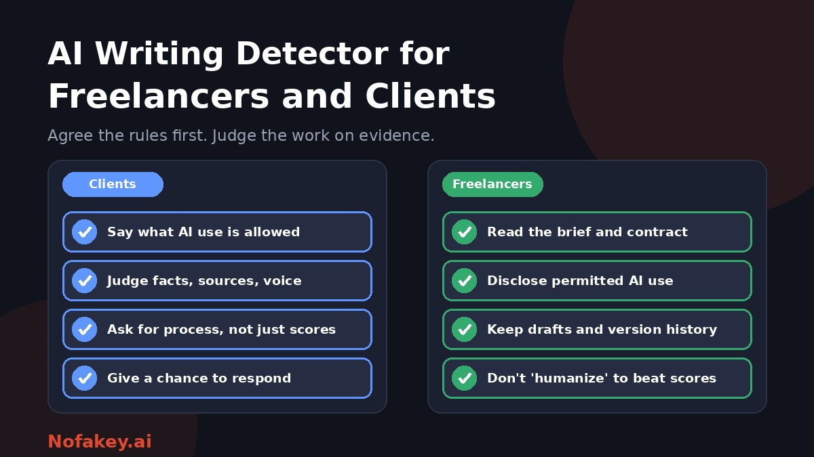

A client runs an article through a detector and sees "70% AI." A freelancer who wrote every word is told to redo it for free. Another freelancer used AI heavily and delivered work that the client never agreed to. Both situations are becoming common, and both come from the same gap: nobody agreed on the rules. This guide helps freelancers and clients handle AI writing detectors fairly, starting with what to settle before the work begins.
Why AI detectors cause friction in freelance work
- Different expectations. Some clients expect freelancers to use AI to work efficiently. Others forbid it entirely. Many have not decided.
- Unreliable scores. Detectors are probabilistic, can flag honest writing and miss edited AI text. See are AI detectors accurate?
- Hidden tool use. Grammar and editing tools add AI suggestions that may show up in a score, even when the writer did the work.
- Money is at stake. A score can lead to rejected work, withheld payment or lost clients, and damage a freelancer's reputation.
- Real risks for clients. Unchecked AI text can contain errors, invented sources, duplicated material and a flat voice.
What clients actually care about
Most clients who say "no AI" are really worried about specific problems. Name them, and check for them directly.
| Real concern | A better check than a detector score |
|---|---|
| Accuracy | Fact-check claims, names, dates, quotes and figures. Look up the sources |
| Originality and copying | Run a plagiarism check for reused or lightly reworded text |
| Brand voice and expertise | Compare with the freelancer's samples and the brief. Does it show real knowledge? |
| Search ranking risk | Judge usefulness and originality, not the tool used. See does Google penalize AI-generated content? |
| Confidentiality | Ask whether client information was pasted into public AI tools |
| Rights and ownership | Put ownership and permitted tools in the contract |
| Transparency | Agree what must be disclosed, and ask for it |
Agree the rules first
The simplest fix for most disputes is a short, clear statement of what AI use is allowed. For example:
| Level | What it means |
|---|---|
| No AI | No generative AI for drafting or rewriting. Basic spell-check is fine |
| Limited AI | AI for research, outlines, idea generation or grammar, with disclosure. The writing itself is the freelancer's |
| AI-assisted | AI may help draft, but a human must edit, fact-check and add expertise, with disclosure |
| AI-integrated | The project calls for AI output, with the freelancer responsible for quality and accuracy |
Put the chosen level in the brief or contract, along with these points:
- What must be disclosed, and how, such as a short note with each delivery.
- Confidentiality. Whether client information may be entered into AI tools, and which tools are acceptable.
- Accuracy and originality. The freelancer is responsible for facts, sources and avoiding copied text.
- Evidence of process. What the client may request, such as drafts or version history.
- How checks are used. If the client uses a detector, say so, and say that a score alone will not decide anything.
- Revisions and disputes. What happens if concerns arise, how the freelancer can respond, and how payment is handled.
Sample wording (adapt, and have a qualified professional review it)
The Freelancer may use AI tools for research, outlining and grammar checks, but must write and edit the final text personally and must not enter the Client's confidential information into public AI tools. The Freelancer will note any AI use in each delivery and remains responsible for the accuracy and originality of the work. The Client may request drafts or version history. AI-detection results will not be treated as conclusive. If a concern arises, the Freelancer will have a reasonable opportunity to respond and revise before any payment decision is made.
This is a starting point, not legal advice. Contract terms and rules on AI differ by country and by platform.
For clients: reviewing work fairly
- Read the work first, and judge it against the brief: usefulness, accuracy, voice and originality.
- Check facts and sources. Look up several claims and references. Invented citations are a stronger signal than any score.
- Run a plagiarism check, if copying is a concern.
- Use a detector only as a clue, if at all, and look at which passages were flagged and why.
- Ask questions, don't accuse. For example: "Can you tell me how you approached this, and whether you used any tools?"
- Request process evidence if the contract allows: drafts, notes, research and version history.
- Offer a chance to revise, and set a short, fair deadline.
- Decide on evidence, not a hunch or a number, and keep a record of your reasons.
What clients should avoid
- Refusing payment because of a score. It is unreliable evidence, and may breach your agreement.
- Asking a chatbot whether it wrote the text. Chatbots are not detectors and can answer wrongly with confidence.
- Demanding impossible proof, such as a guarantee of a 0% score.
- Accusing in public, or on social media or review sites, before the facts are clear.
- Changing the rules after delivery. If you did not forbid AI at the start, be careful about penalising it later.
For freelancers: protecting yourself
- Read the brief and contract for AI terms, and ask if they are unclear. Follow the client's definition of "AI-generated."
- Write in a tool that keeps version history, and keep notes, outlines, research and interview records.
- Disclose permitted AI use briefly, for example "I used AI for outlining and grammar checks. All writing, analysis and fact-checking are mine."
- Mention editing tools. Grammar and rewriting tools suggest AI-like changes that may affect a score. Telling a client up front avoids surprises.
- Add what only you can: expertise, original examples, interviews, data and a distinct voice.
- Check facts and sources yourself. You are responsible for errors, wherever they came from.
- Protect client confidentiality. Do not paste private client material into public AI tools unless the client agrees.
- Be careful with self-checks. A detector can show you which passages sound generic, but treat the result as a clue.
If a client questions your work
- Stay professional and calm. Treat it as a reasonable concern, even if the result is wrong.
- Ask for details: which tool, what result, and which passages.
- Share your evidence: version history, drafts, research notes and sources.
- Refer to the contract and what it says about AI and disputes.
- Explain the limits of detectors, politely. Mention that scores can be wrong, especially for formal or non-native writing.
- Offer to discuss the work, or to revise specific passages if the client has concerns about quality.
- Keep records of all communication, and use the platform's dispute process if you work through one.
Sample reply (adapt to your situation)
Thanks for flagging this. I wrote this piece myself, using the approach we agreed. I can share my drafts, research notes and version history. Detection tools can give false results, so I'd be happy to talk through the piece with you and revise any passages that don't meet the brief. Could you tell me which tool and result you used?
Freelancers writing in a second language
If English is not your first language, you face an extra risk: research has found that detectors flag non-native writing more often. Keep strong process evidence, mention your background if a concern arises, and read AI detector false positives for non-native English writers.
If you work through a platform or an agency
- Read the platform's AI rules. Some scan work or require disclosure.
- Keep your own records in case a platform or agency raises a concern.
- Agencies and teams can use batch screening for triage, with human review. See bulk AI content checker for agencies and AI content audit for SEO agencies.
- Editors and publishers can adapt the workflow in AI detectors for publishers and editors.
Disclosing AI use to readers
Separate from the client relationship, the published piece may need a disclosure for readers. Agree who adds it and where. Wording ideas are in how to label AI-generated content. If a link, offer or message from a new client looks suspicious, paste it into our free checker for a quick first read. It is not a text detector for articles.
Conclusion
AI detectors cause trouble in freelance work mostly because the rules were never agreed. Settle them up front, in writing. Clients should check accuracy, sources and originality, and treat scores as a minor clue. Freelancers should disclose permitted use, keep process evidence and protect client confidentiality. When a concern arises, talk, look at the evidence and give each side a fair chance to respond. Find more guides on the Nofakey.ai blog.
Frequently asked questions
Should clients use AI detectors on freelancers’ work?
They can be used as a minor prompt for a closer look, but not as the sole basis for rejecting work or withholding payment. Detectors are unreliable, so check accuracy, sources, originality and fit with the brief, and talk to the freelancer.
Do freelancers have to tell clients they use AI?
Follow the contract and the client’s stated policy. If the rules are unclear, ask. Where AI is allowed, a short disclosure of how you used it builds trust. Never use AI in ways the client has prohibited.
What should an AI clause in a freelance contract cover?
Which AI uses are allowed, what must be disclosed, how confidential client information may be handled, who is responsible for accuracy and originality, what evidence of process may be requested, and how disputes and payment are handled. Have a qualified professional review the wording.
What should I do if a client accuses me of using AI?
Stay professional, ask which tool and result were used, share drafts, version history and research notes, offer to discuss the work, and refer to the contract’s AI terms. A detector score alone is not proof.
Is it okay to run my own work through a detector before delivering it?
It can help you spot generic passages, but treat the result as a clue. Do not use tools designed to hide AI use, and do not change good writing just to move a score.
Got a suspicious link, offer or message to check?
Run it through the checker